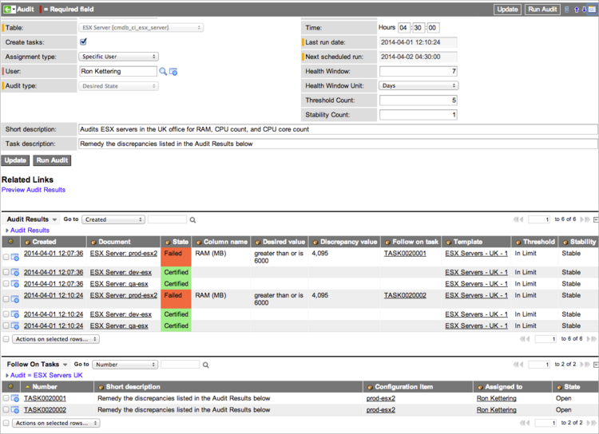
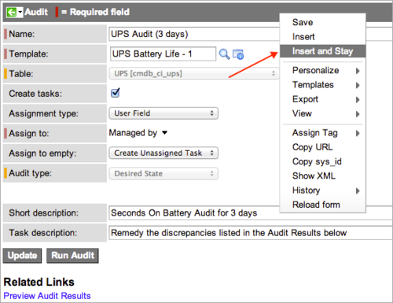

Certification Audits
| |
Note: This article applies to Fuji. For more current information, see Certification Audits at http://docs.servicenow.com
The Wiki page is no longer being updated. Please refer to http://docs.servicenow.com for the latest product documentation. |
Contents
1 Overview
A certification audit compares the actual attributes of certain ServiceNow records, selected by a filter, against the expected attributes, relationships, and related record values defined by template conditions or a script. You can configure the audit to create and assign follow-on tasks to remediate any discrepancies the audit finds. Audit records use a standard ServiceNow scheduler to determine when to run. After an audit runs, the results and follow-on tasks appear in related lists in the audit record.
Users with the certification_admin role can create, update, delete, and run audits. Users with the certification role can view audits, audit results, and follow-on tasks.
2 Creating Audits
Compliance offers two types of audits: one uses templates to define conditions and the other uses a script. For information about using a script to audit ServiceNow records, see Scripted Audits.
| |
Note: Data certification does not use templates for auditing. For more information, see Planning Data Certification. |
To create an audit that uses a template:
- Ensure that an appropriate template record was created for this audit.
- Conditions in the template define the values to audit.
- Navigate to one of these modules:
- Compliance > Audits
- Compliance > Architecture Compliance > Audits
- Compliance > Desired State > Audits
- Compliance > Scripted Audits > Audits
- Click New.
- The system opens a new record for the audit type associated with the navigation path you selected. The Audit type field is read-only.
- Complete the form using the fields described in the table.
- Right-click the header bar and select Save.
- The Audit Results and Follow On Tasks related lists appear on the form.
- To run the audit immediately, click Run Audit.
- When an audit runs, ServiceNow updates the date and time in the Last run date field and populates the related lists.
- 
- View the records that passed and the discrepancies found by the audit in the Audit Results related list.
- You can open template records and any follow-on tasks directly from this related list. Notice that the value in the Task description field now appears as the Short description in the follow-on tasks.
{kind=link}
{kind=link}
| |
Note: You cannot delete audit records that have audit results or audit results that have follow-on tasks. ServiceNow disables the Delete option in records and lists where these dependent records exist. |
| Field | Description |
|---|---|
| Name | Name for this audit. |
| Filter | Filter to use when the audit type is Scripted. This field is required for scripted audits, but is hidden for all other audit types. |
| Template | [Required] Template to use when this audit runs. The list of available templates is filtered by audit type, and only the active versions of templates are available for selection. For example, when you create an audit from Desired State, only templates of the Desired State audit type are available for selection. For the Desired State and Architecture Compliance audit types, only templates for tables that extend the Configuration Item [cmdb_ci] table are available. This field is hidden when the audit type is Scripted. |
| Table | [Read-only] Table for the template. |
| Create tasks | Option to create follow-on tasks for correcting discrepancies (selected). In a scripted audit, you can create the logic for either task state by using true if tasks should be created or false if tasks should not be created. By default, this check box is cleared (false) in a new audit record. |
| Assignment type | Method for assigning follow-on tasks. This field is visible only when the Create task check box is selected. Choices are:
|
| User | The specific user this audit assigns to follow-on tasks. This user must have the certification role. This field is available under these conditions:
|
| Assign to group | The group field that defines which group this audit assigns to the follow-on task. This field is available only when the Assignment type is Group Field. |
| Group | The specific group this audit assigns to follow-on tasks. This field is available only when the Assignment type is Specific Group. |
| Assign to | The user field that defines which user this audit assigns to the follow-on task. This field is available only when the Assignment type is User Field. |
| Assign to empty | The behavior to use if the field selected in Assign to or Assign to group is blank on the record being audited. For example, if a follow-on task must be assigned to a manager, but no manager is identified, the Assign to empty setting determines what will happen. This field appears only when the Assignment type is User Field or Group Field. Choices are:
The audit automatically creates follow-on tasks for all records that have Assign to populated, regardless of the Assign to empty setting. |
| Short description | Brief description of this audit's purpose. |
| Task description | General description of the work required for this audit's follow-on tasks. All follow-on tasks created by this audit inherit this description. |
| Active | Activation control for this audit record. Clear this check box to prevent this audit from running and creating follow-on tasks. |
| Run | How often to run the schedule that generates the audit.
|
| Day |
|
| Repeat Interval | If Run is Periodically, the frequency that the audit should run, based on a 24 hr. clock. Enter the number of days between audits and the time of day the audit should run. For example, set Days to 10 and Hours to 14:00:00 to run the audit every 10 days at 2:00pm. |
| Starting | If Run is Periodically or Once, the date and time when the audit should run. |
| Time | If Run is Daily, Weekly, Monthly, or Once, the time of day, on a 24-hour clock, when the audit should run. |
| Last run date | [Read-only] The last date and time the audit ran, either on its regular schedule or manually. Audit previews do not update this field. |
| Next scheduled run | [Read-only] The next date and time when the audit should run. The system recalculates this field when you change the schedule. |
| Audit type | [Read-only] The type assigned to this audit. The system selects the audit type based on the application from which the audit is created. This can be:
|
| Health window | Duration of the evaluation period for threshold and stability. The health window value defines the number of Health window units in an audit's evaluation period. This value is expressed as a positive integer. The default value for this field is 7. See Health Windows for more information. This field is available starting with the Eureka release. |
| Health window unit | Unit of measurement that defines the duration of a health window. The default value for this field is Days. Choices are:
This field is available starting with the Eureka release. |
| Threshold count | Sets the acceptable number of audit failures for a CI's desired state field that can occur within the specified health window. The audit results indicate when a desired state field is within or has exceeded this threshold limit. The default value for the threshold is 5. This field is available starting with the Eureka release. |
| Stability count | Sets the acceptable number of times that audit results for a CI can switch between Certified and Failed within the specified health window. The audit results for a CI indicate whether it is stable or unstable. The default value for stability is 1. This field is available starting with the Eureka release. |
| Run this script | Audit script to run. This field is available only when the audit type is Scripted. The Audit form includes a sample script with instructions for performing the audit and generating the follow-on tasks. See Scripting Methods for a list of the methods provided and the accepted parameters. |
2.1 Health Windows
A health window is a trailing time frame in which ServiceNow evaluates audit results from CIs that have desired state fields defined. Each window is defined by the Health window and Health unit fields, and ends when an audit runs. For example, an audit that runs on the 15th of the month with a 7 day window, evaluates a desired state field's threshold values from the 8th to the 15th. When the same audit runs the next day, the system evaluates the threshold from the 9th to the 16th, and so on, counting backward 7 days from the current day. ServiceNow evaluates a CI's threshold values for each health window, without considering the results from the previous window. As a result, a CI's health can fail for one audit and then pass in a subsequent audit that runs in a new window.
ServiceNow evaluates stability by recording the number of times a CI's desired state threshold value switches between Failed and Certified within the health window. In the example shown here, a 5 minute health window was set for the desired state field on a UPS unit that measures the remaining battery time. The threshold was set at 2, which allows the field to fail two audits in the same health window.
{kind=link}
In the initial audit, the system evaluated the threshold value for the Seconds on battery field within a 5 minute window running from 13:52:51 to the time of the audit at 13:57:51. The desired state field showed In Limit for that audit and the second audit conducted less than a minute later. The next two audits were conducted within 5 minutes of the first audit and both showed that the threshold (set at 2) was Exceeded. A subsequent audit was conducted 5 minutes after the audit in which the desired state field threshold was first exceeded. Since the health window had moved forward enough units, the Seconds on battery field was within limits again with only one failure in the 5 minute window being evaluated.
{kind=link}
3 Copying Audits
To create a new audit from an existing one:
- Open the audit record you want to copy.
- Change the name or short description to distinguish this audit from the original.
- Make any other changes you need.
- Right-click in the header bar and select either Insert or Insert and Stay from the context menu.
- 
- The system clears the Last run date field and inserts the record into the database.
{kind=link}
4 Previewing Results
You can preview an audit to view potential results without saving audit results or generating follow-on tasks. For example, you might use this feature to test template conditions for correctness without creating thousands of result records.
In an audit record, click Preview Audit Results under Related Links.
{kind=link}
A summary of the potential audit results appears at the top of the audit record. Previewing does not change the Last run date field.
{kind=link}
5 Performing Audits
The system performs audits automatically from the schedule you configure. Users with the certification_admin or admin role can generate on-demand audits directly from the Audit form by clicking Run Audit. When an audit runs, ServiceNow populates the Audit Results related list in the form and shows follow-on tasks, if any, in the Follow On Tasks related list. Click Preview Audit Results to generate an audit preview that tests your template conditions without generating any audit results.
{kind=link}